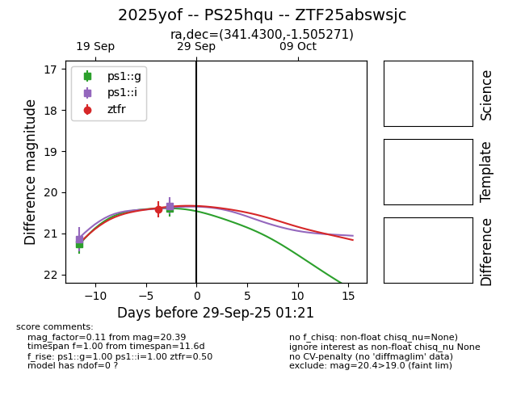
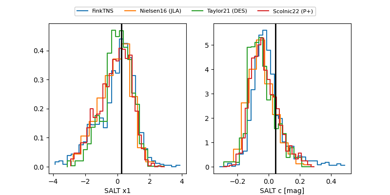

FINK: ZTF25abswsjc
Lasair: ZTF25abswsjc
ALeRCE: ZTF25abswsjc
TNS: 2025yof
YSE: 2025yof
2025yof (yse,tns)
ZTF25abswsjc (ztf,fink)
PS25hqu (panstarrs)
equatorial (ra, dec) = (341.4300,-1.50527)
galactic (l, b) = (67.9742,-50.45524)


last ps1::g=20.39, ps1::i=20.33, ztfr=20.41
2 ps1::g, 2 ps1::i, 1 ztfr detections